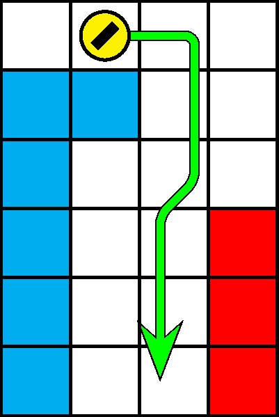

一般指針
愚形・ノックバック（縦レーザー）

指針
縦レーザーステージにおいては，非整数水平位置を急降下しません．水平位置は可能な限り降下の前に調整します．
解説
非整数水平位置を降下しているときに有色ブロックの側面に当たると，犬はブロックの反対側へ僅かな水平距離のノックバックを受けます（図 3.4.9.1）．レーザーの判定は幅をちょうど 1 マスもつため，縦レーザーステージ（400 m型と 1100 m型）におけるノックバックは照射の原因となり得ます．縦レーザーステージにおける水平位置の調整はなるべく，ノックバックの影響を受けない非降下中に行います．降下中に水平位置を調整する場合は，ノックバックの影響に注意します．
急降下中は犬の水平位置を左右入力によっては調整できなくなり，ノックバックの影響を解消するためには着地を待たなければならない可能性があります．このため，縦レーザーステージにおける水平位置調整のための急降下は避けるべきです．急降下は，水平位置を整数値に調整した後に行うことが推奨されます．「定跡・レーザー回避」も参照してください．